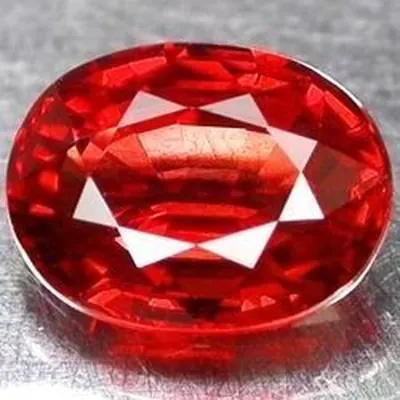

藍寶石產地：喀什米爾、斯里蘭卡與澳洲
喀什米爾是傳說、斯里蘭卡是日常、澳洲是大宗——同一顆藍寶石，產地決定了它的藍與它的價。

核心定義
藍寶石的產地版圖遼闊：喀什米爾、斯里蘭卡、緬甸、泰國、澳洲、馬達加斯加、蒙大拿（美國）等。其中喀什米爾以絕版傳說封神，斯里蘭卡以優雅明亮著稱，澳洲則供應全球大宗深藍。
產地影響的不只是顏色，還有內含物「指紋」與市場行情——喀什米爾藍寶的矢車菊藍＋絲絨質感讓它成為天價；斯里蘭卡藍寶色調多樣、淨度佳；澳洲藍寶多為深藍至黑藍，常被加熱提色。
特徵與分類
| 產地 | 顏色氣質 | 內含物特徵 | 市場地位 |
|---|---|---|---|
| 喀什米爾 | 矢車菊藍、絲絨感 | 細針狀「絲絨」、色帶 | 傳奇絕版天價 |
| 斯里蘭卡 | 明亮、多樣（含帕帕拉恰） | 金紅石針、鋯石暈環 | 高品質主流 |
| 緬甸 | 濃皇家藍 | 金紅石針、色帶 | 高端 |
| 澳洲 | 深藍至黑藍 | 色帶明顯、常需加熱 | 大宗平價 |
斯里蘭卡是「寶石島」：除了藍寶，還產出星光藍寶、帕帕拉恰與貓眼金綠寶石。它的藍寶色調範圍極廣，從淺天藍到濃皇家藍都有，是全球高品質藍寶的重要來源。
科學原理
藍色來自鐵鈦電荷轉移，產地差異在於鐵鈦含量與內含物組合：喀什米爾藍寶的「絲絨」是極細針狀內含物散射所致；斯里蘭卡藍寶常見金紅石針與鋯石暈環；澳洲藍寶鐵含量高，顏色偏深，甚至帶墨綠底調。
實驗室產地鑑定靠微量元素與內含物組合比對：鐵鈦比例、鉻釩含量、鋯石暈環等特徵，都能幫助鑑定師推斷出身——當然，這是機率判斷，不是絕對答案。
鑑定與鑑別方法
- 觀察色帶與內含物（絲絨、金紅石針、鋯石暈環）
- 測微量元素（實驗室 LA-ICP-MS）
- 比對權威證書的 origin 欄位
- 注意加熱：澳洲藍寶多經加熱提色，緬甸斯里蘭卡頂級藍寶講究無燒
- 排除合成：焰熔法合成藍寶顏色過於均勻、無天然內含物
市場行情與保養建議
行情：喀什米爾藍寶任何尺寸都是天價（絕版＋傳說）；緬甸皇家藍與斯里蘭卡頂級藍寶是高端的常客；澳洲藍寶大宗流通、價格友善。若追求「藍寶石的美」而非「產地故事」，斯里蘭卡與馬達加斯加是性價比甜蜜點。
投資建議：無燒＋權威產地證書＋高飽和藍，三者齊備才是收藏級；缺一項，價格與流動性都會打折。
常見誤區
喀什米爾礦區百年來產量極少、早已枯竭，市面流通的多是庫存與二手。號稱「喀什米爾」的藍寶，多數是誤稱或偽稱——必須有權威產地證書。
過深的藍會發黑、發暗，反而不討喜。理想的藍是「濃而亮」——飽和度高、色調不過暗。深不是價值，亮才是。
冷知識
1881 年，印度喀什米爾高山上的山崩意外暴露了藍寶礦床，隨後十年間產出大量頂級藍寶，之後迅速枯竭——傳奇始於一場地質意外。
20 世紀中葉，澳洲是藍寶石最大供應國，大量深藍藍寶經加熱提色後流向全球——如今雖被馬達加斯加等取代，但仍是重要產地。
反直覺觀點
與市場認知的「濃豔藍」不同，喀什米爾藍寶以柔和絨感的矢車菊藍聞名——它的貴在「質感」與「絕版」，不在「濃」。頂級與「最濃」不是一回事。
喀什米爾是傳說、斯里蘭卡是精品，但全球藍寶飾品的「量」靠的是澳洲與馬達加斯加——沒有大宗產地，藍寶只能活在博物館。